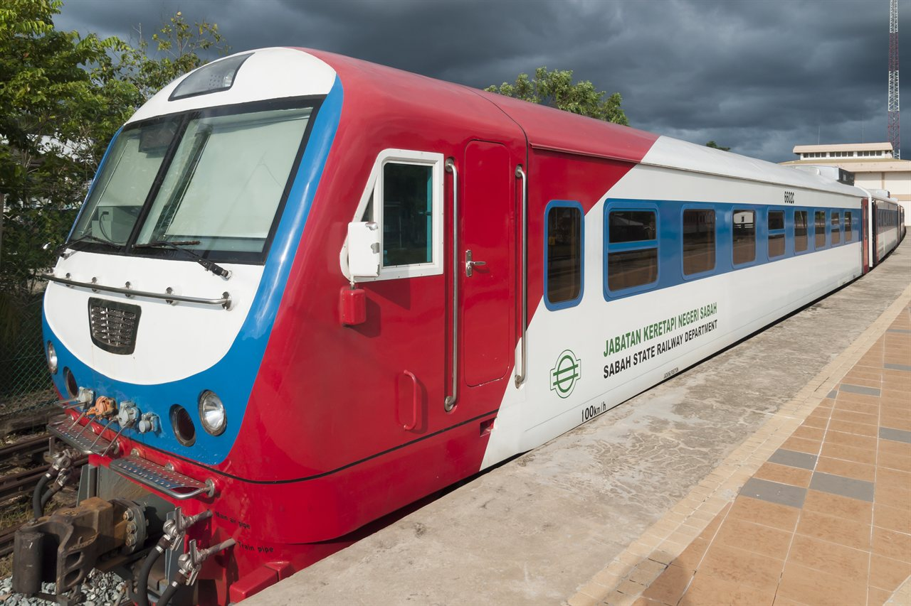
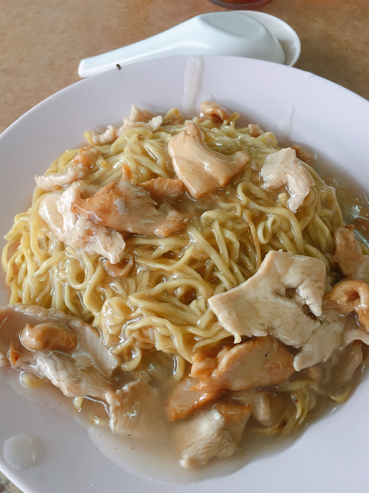
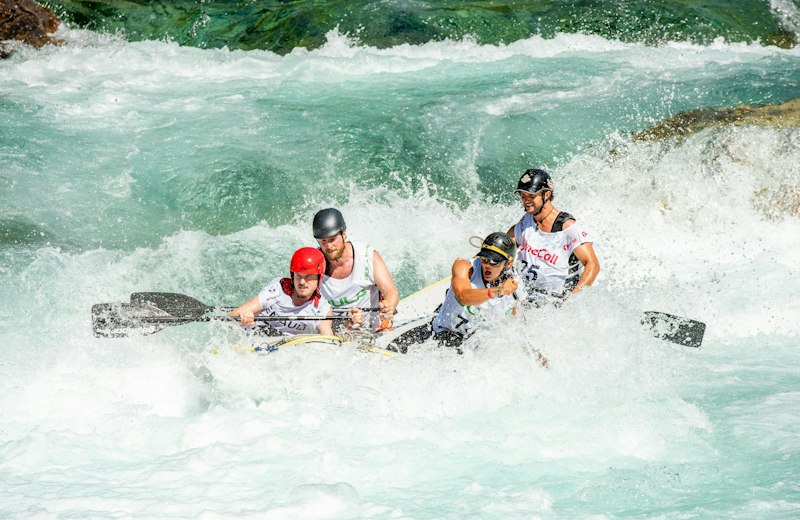
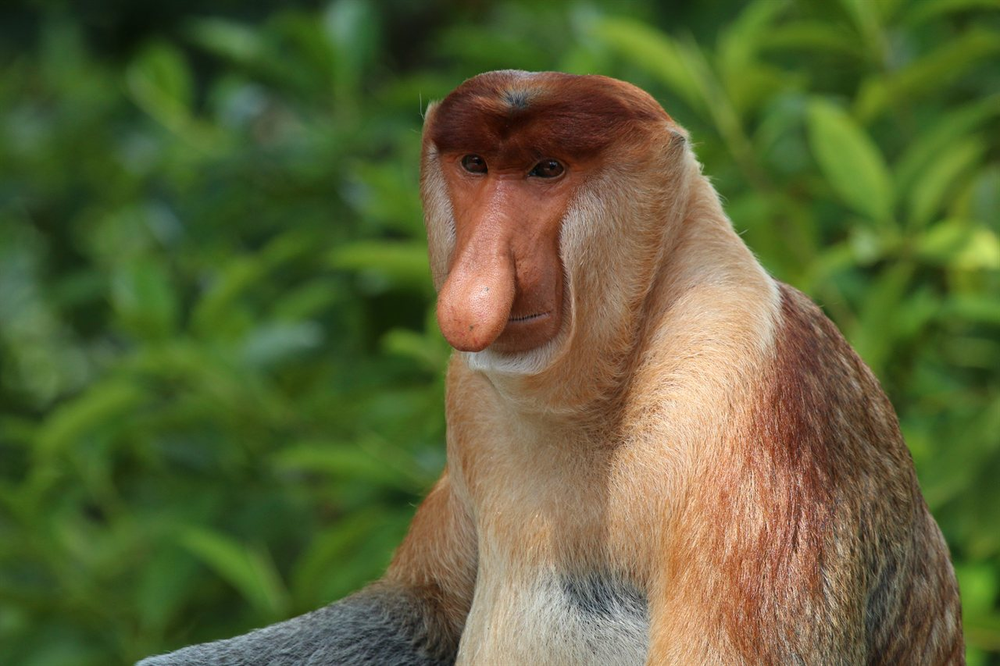
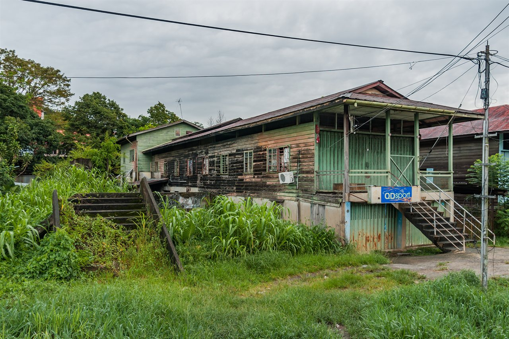
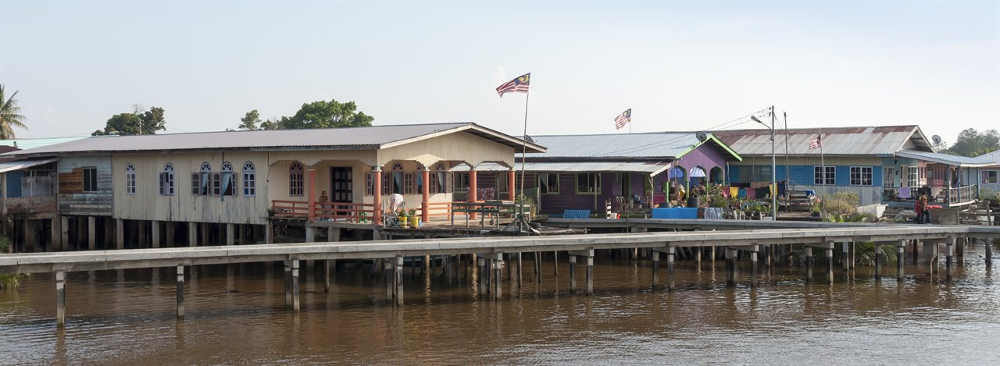

Real Landmarks & Heritage of Beaufort
Explore real, documented photographs capturing the unique spirit of Beaufort, from the historic railway station and local shophouses to river rafting, proboscis wildlife, and traditional cuisine.

Railway HubStesen Keretapi Beaufort
The authentic, active Beaufort Railway Station. Founded in 1896, Beaufort serves as the beating operational heart of the historic Sabah State Railway, the only running railway network in all of Borneo.

Signature FoodFamous Beaufort Mee (Mee Beaufort)
An authentic photograph of Sabah's most celebrated noodle dish! Handmade yellow noodles wok charred with smoky wok hei, fresh local choy sum greens, tender meats, and signature savory egg thickened gravy.

Extreme AdventurePadas River White Water Rafting
Real white water rafting on the roaring rapids of Sungai Padas! One of Southeast Asia's best Grade III to IV rafting rivers, slicing through raw Borneo jungle gorges accessible exclusively by the Beaufort train.

Rare WildlifeKlias Wetland Proboscis Wildlife
The iconic Proboscis Monkey (Nasalis larvatus / Monyet Belanda), endemic to Borneo and protected in the Klias mangrove river reserve. Twilight eco boat cruises also showcase millions of synchronized fireflies.

Town HeritageHistoric Beaufort Town Shophouses
Authentic wooden long shophouses that reflect Beaufort's colonial trading history. These traditional shophouses, elevated to withstand seasonal river surges, house generations old kopitiams and family businesses.

Coastal WetlandsWeston Historic Wetland Settlement
A tranquil century old river community in Beaufort district with wooden houses over the water. Historically the western coastal terminal of the railway, today it is famous for wetland mangrove tours and fresh river seafood.
Beaufort At A Glance: Key Facts
Important geographical, historical, and cultural pillars of Beaufort, Sabah.